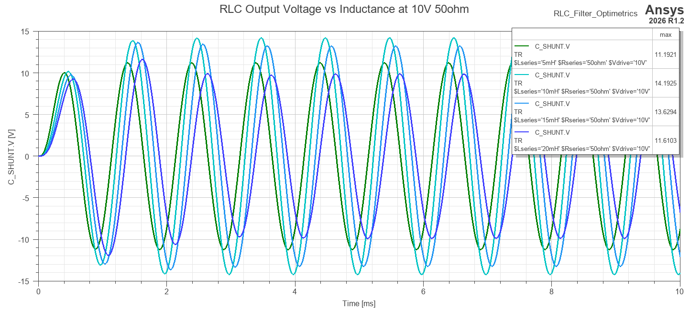
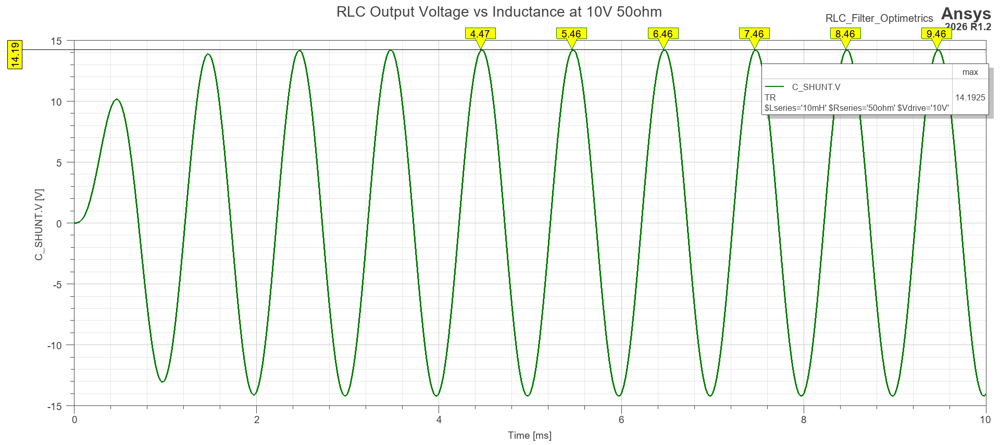

Download this example
Download this example as a Jupyter Notebook or as a Python script.
RLC filter circuit design analysis#
This example demonstrates how to use PyAEDT to set up and analyze an RLC filter circuit in Twin Builder. It covers setup creation, parametric sweeps of key circuit parameters, and post-processing of simulation results. Generated plots illustrate how the parametric sweep affects the circuit response. Key behaviors such as resonance peaking, damping, and current flow under different resistance values are examined. Studying how an RLC filter behaves as resistance, inductance, and drive voltage vary is useful for understanding key circuit phenomena such as resonance, damping, overshoot, and settling time. Parametric analysis helps reveal how component values and input conditions influence the response, making it easier to evaluate filter performance and identify meaningful operating points.
This example MUST be run in graphical mode.
Keywords: Twin Builder, RLC.
[ ]:
import tempfile
import time
from pathlib import Path
import ansys.aedt.core
from ansys.aedt.core.examples.downloads import download_file
from ansys.aedt.core.generic.file_utils import write_csv
from matplotlib import pyplot as plt
Define constants#
Constants help ensure consistency and avoid repetition throughout the example.
[ ]:
AEDT_VERSION = "2026.1"
NUM_CORES = 4
NG_MODE = False # Open AEDT UI when it is launched.
TB_FILE_NAME = "RLC_Filter_pyaedt.aedt"
TB_DESIGN_NAME = "RLC_Filter_Optimetrics"
Create temporary directory#
Create a temporary directory where downloaded data or dumped data can be stored. If you’d like to retrieve the project data for subsequent use, the temporary folder name is given by temp_folder.name.
[ ]:
temp_folder = tempfile.TemporaryDirectory(suffix=".ansys")
Download AEDT file#
Set the local temporary folder to export the AEDT file to. The download_file() method provides access to a library of examples and models from the Ansys GitHub organization: example-data repository.
[ ]:
project_path = download_file(
source="pyaedt/twinbuilder_rlc_filter",
name=TB_FILE_NAME,
local_path=temp_folder.name,
)
Launch Twinbuilder AEDT#
Create an instance of the Twinbuilder class. The Ansys Electronics Desktop will be launched with the active Twinbuilder design. The tb object is subsequently used to create and simulate the model.
[ ]:
tb = ansys.aedt.core.TwinBuilder(
project=project_path,
design=TB_DESIGN_NAME,
version=AEDT_VERSION,
non_graphical=NG_MODE,
new_desktop=True,
)
Analysis setup#
Create a transient setup. If setup_type is not specified, the default setup type is used (Transient).
[ ]:
setup = tb.create_setup(setup_type="TwinbuilderTR", name="TR")
Change setup properties to specify the stop time, minimum time step, and maximum time step. In the order: Stop Time, Min time step, Max time step.
[ ]:
setup.props["TransientData"][0] = "10ms"
setup.props["TransientData"][1] = "1us"
setup.props["TransientData"][2] = "20us"
setup.update()
Save and close the project to ensure that all changes are written to disk. Reopen the project to ensure that the changes are reflected in the current session.
[ ]:
tb.close_project(save=True)
tb = ansys.aedt.core.TwinBuilder(
project=project_path,
design=TB_DESIGN_NAME,
version=AEDT_VERSION,
non_graphical=NG_MODE,
new_desktop=True,
)
Parametric sweep#
Create a parametric sweep for the RLC filter circuit. The sweep varies the series resistance, series inductance, and drive voltage.
[ ]:
sweep = tb.parametrics.add(
variable="$Rseries",
start_point=25,
end_point=100,
step=4,
variation_type="LinearCount",
)
sweep.add_variation(
sweep_variable="$Lseries",
start_point=5,
end_point=20,
step=4,
variation_type="LinearCount",
)
sweep.add_variation(
sweep_variable="$Vdrive",
start_point=1,
end_point=10,
step=4,
variation_type="LinearCount",
)
Analyze parametric sweep
[ ]:
sweep.analyze()
Post-processing#
In this example two different approaches to post-processing are demonstrated. The first approach uses the create_report method to creat in AEDT a report with the specified expressions and domain. The second approach uses the get_report_data method to retrieve the report data in Python without creating a report in AEDT. After retrieving the data, the results are exported to a CSV file.
Create reports in AEDT#
First report shows the startup response and steady-state apmlitude/phase difference between the voltage across the source V_IN.V and the voltage across the shunt capacitor C_SHUNT.V assuming a 10V, 10mH, 50ohm input.
[ ]:
vars = tb.available_variations.all
vars["$Rseries"] = "50ohm"
vars["$Lseries"] = "10mH"
vars["$Vdrive"] = "10V"
report_voltages = tb.post.create_report(
plot_name="RLC 10V 10mH 50ohm Input Output",
domain="Time",
expressions=["C_SHUNT.V", "V_IN.V"],
primary_sweep_variable="Time",
variations=vars,
context={"optimetrics_setup": sweep.name}
)
Export report data to CSV for the whole time domain. The CSV file will be saved in the temporary folder created earlier.
[ ]:
export_path = tb.post.export_report_to_file(
output_dir=temp_folder.name,
plot_name=report_voltages.plot_name,
extension=".csv",
)
Export report data to CSV for a specific time range. Supposedly, the data are exported for the time range from 0 to 5 ms.
[ ]:
export_path_range = tb.post.export_report_to_file(
output_dir=temp_folder.name,
plot_name=report_voltages.plot_name,
extension=".csv",
start="0ms",
end="5ms",
step="1ms"
)
Second report shows resonance for different values of series inductance. The report shows the voltage across the shunt capacitor C_SHUNT.V for different values of series inductance. Values for the series inductance are 5, 10, 15, and 20 mH while the series resistance is fixed at 50 ohms and the drive voltage is fixed at 10V.
[ ]:
vars = tb.available_variations.all
vars["$Rseries"] = "50ohm"
vars["$Lseries"] = "All"
vars["$Vdrive"] = "10V"
report_resonance = tb.post.create_report(
plot_name="RLC Output Voltage vs Inductance at 10V 50ohm",
domain="Time",
expressions=["C_SHUNT.V"],
primary_sweep_variable="Time",
variations=vars,
context={"optimetrics_setup": sweep.name}
)
Find max values of C_SHUNT.V for all combinations and export legend in a csv file.
[ ]:
report_resonance.add_trace_characteristics(name="max")
output_file = f"{temp_folder.name}\\{report_resonance.plot_name}_legend.csv"
[ ]:
report_resonance.export_table_to_file(
plot_name="RLC Output Voltage vs Inductance at 10V 50ohm",
output_file=f"{temp_folder.name}\\{report_resonance.plot_name}_legend.csv",
table_type="Legend"
)

Export C_SHUNT.V for all different values of series inductance.
[ ]:
export_path_resonance = tb.post.export_report_to_file(
output_dir=temp_folder.name,
plot_name=report_resonance.plot_name,
extension=".csv",
)
Export report data to CSV for a specific value of series inductance. Supposedly, the data are exported for the series inductance of 10 mH where resonance peaking occurs. Add a Y cartesian marker at maximum point.
[ ]:
vars["$Lseries"] = "10mH"
report_resonance.update_trace_in_report(
traces=["C_SHUNT.V"],
variations=vars,
)
report_resonance.add_cartesian_y_marker(
value="14.1925V",
)
export_path_resonance_Lseries10mH = tb.post.export_report_to_file(
output_dir=temp_folder.name,
plot_name=report_resonance.plot_name,
extension=".csv",
)

Create a PyAEDT report object (not in AEDT GUI).#
The report demonstrates how resistance damps resonance for different values of series resistance. The values for the series resistance are 25, 50, 75, and 100 ohms. The series inductance is fixed at 10 mH and the drive voltage is fixed at 10V.
[ ]:
report_damp = tb.post.reports_by_category.standard(
expressions=["C_SHUNT.V"],
)
Get the report data of C_SHUNT.V for all different values of series resistance.
[ ]:
report_damp_data = tb.post.get_solution_data(
expressions=["C_SHUNT.V"],
primary_sweep_variable="Time",
variations={"$Rseries": "All", "$Lseries": "10mH", "$Vdrive": "10V"},
context={"optimetrics_setup": sweep.name},
)
Two different approaches are shown:
Export
C_SHUNT.Vdata for each variation in a csv file. With this approach, a plot is generated with Matplotlib for each variation of series resistance.
[ ]:
for var in report_damp_data.variations:
report_damp_data.active_variation = var
expr = report_damp_data.get_expression_data()
rows = [["Time", "C_SHUNT.V"]]
time_values = expr[0]
c_shunt_values = expr[1]
rows.extend([[t, v] for t, v in zip(time_values, c_shunt_values)])
csv_path = Path(temp_folder.name) / f"RLC Output Voltage vs Resistance at 10V 10mH_{var['$Rseries']}.csv"
write_csv(str(csv_path), rows)
plt.plot(time_values, c_shunt_values)
plt.grid()
plt.xlabel("Time")
plt.ylabel("C_SHUNT.V")
plt.show()
Export
C_SHUNT.Vdata in a csv for all combinations of$Rseries.
[ ]:
report_damp_data.export_data_to_csv(
output=temp_folder.name + "\\RLC Output Voltage vs Resistance at 10V 10mH.csv",
delimiter=","
)
Release AEDT#
[ ]:
tb.save_project()
tb.release_desktop()
# Wait 3 seconds to allow AEDT to shut down before cleaning the temporary directory.
time.sleep(3)
Clean up#
All project files are saved in the folder temp_folder.name. If you’ve run this example as a Jupyter notebook, you can retrieve those project files. The following cell removes all temporary files, including the project folder.
[ ]:
temp_folder.cleanup()
Download this example
Download this example as a Jupyter Notebook or as a Python script.